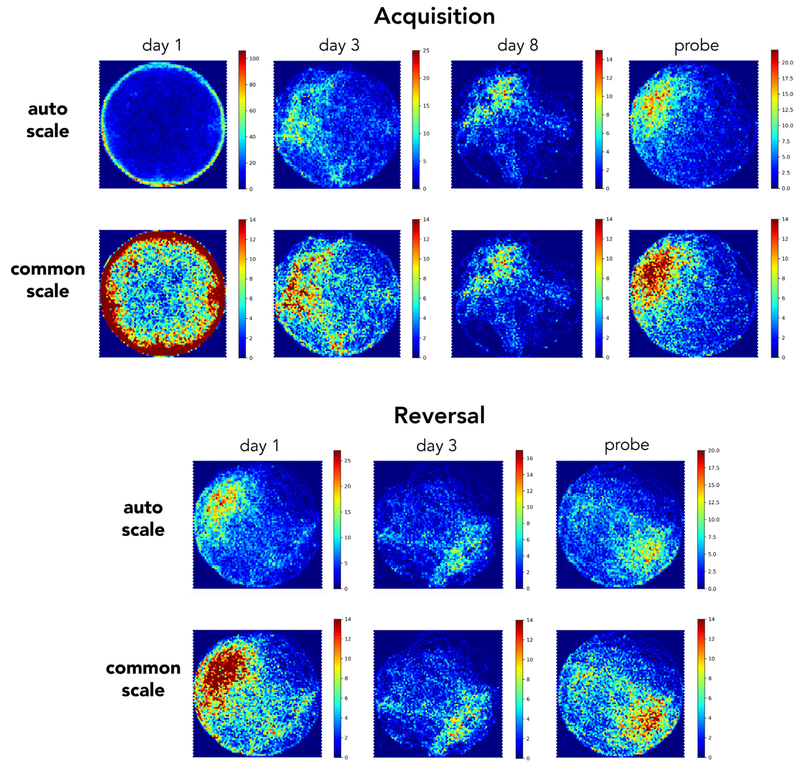
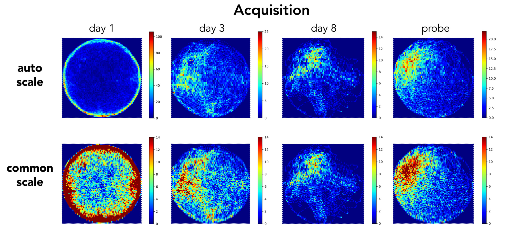
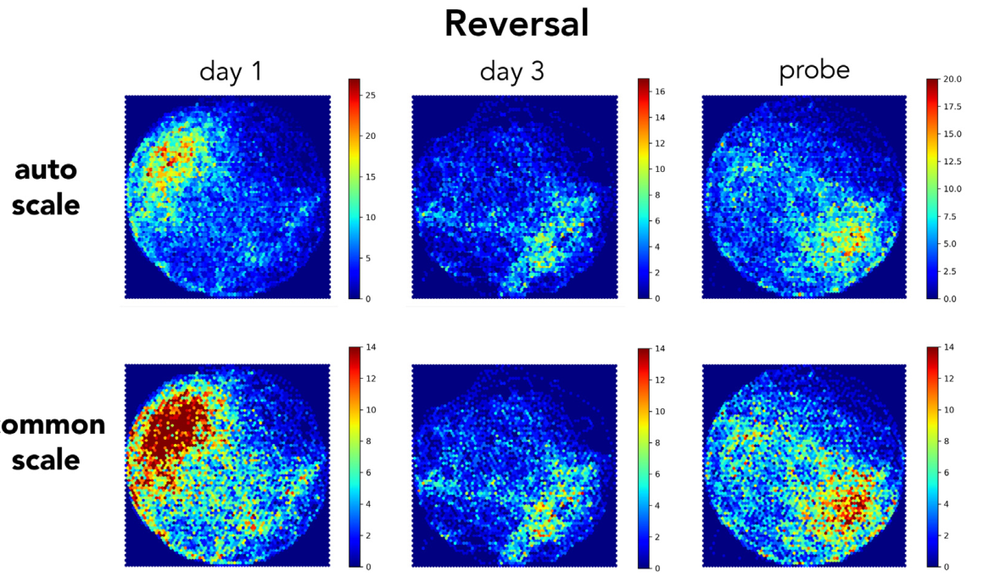
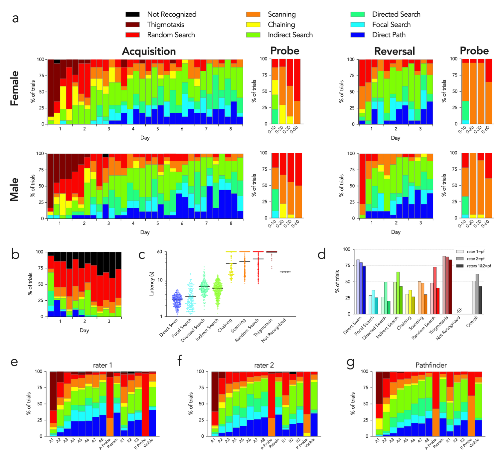
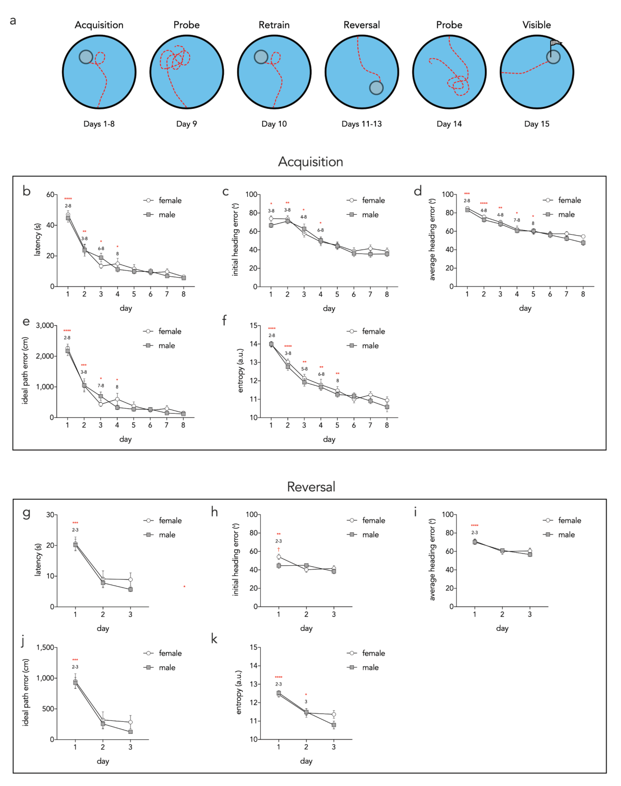
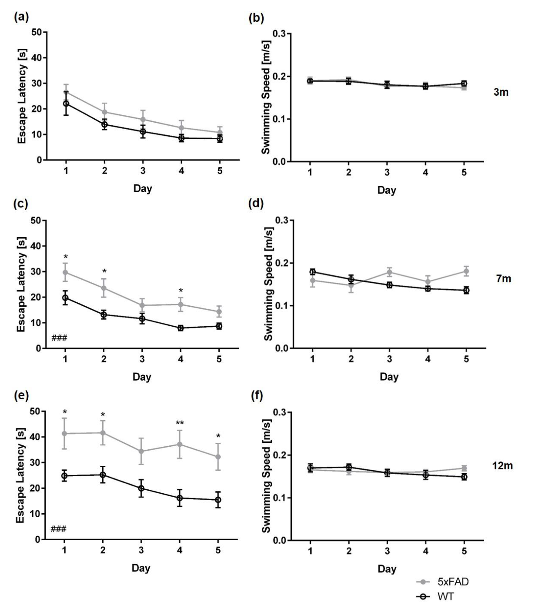
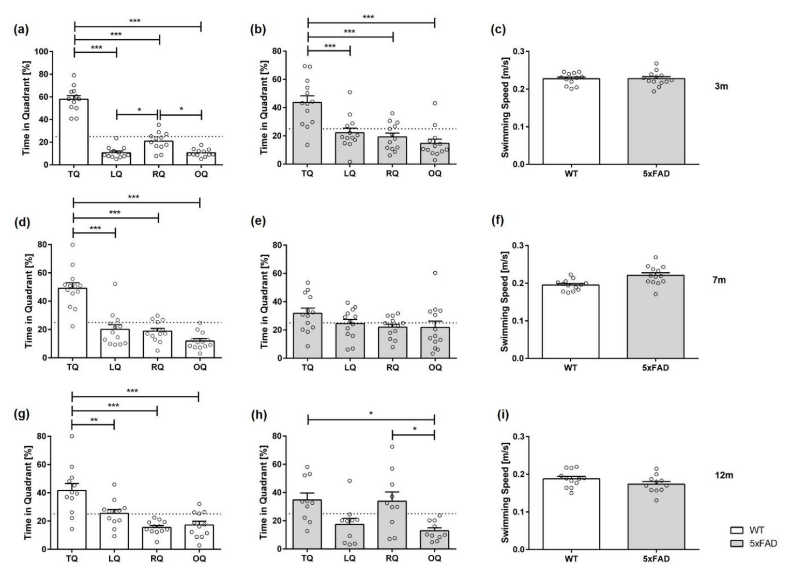
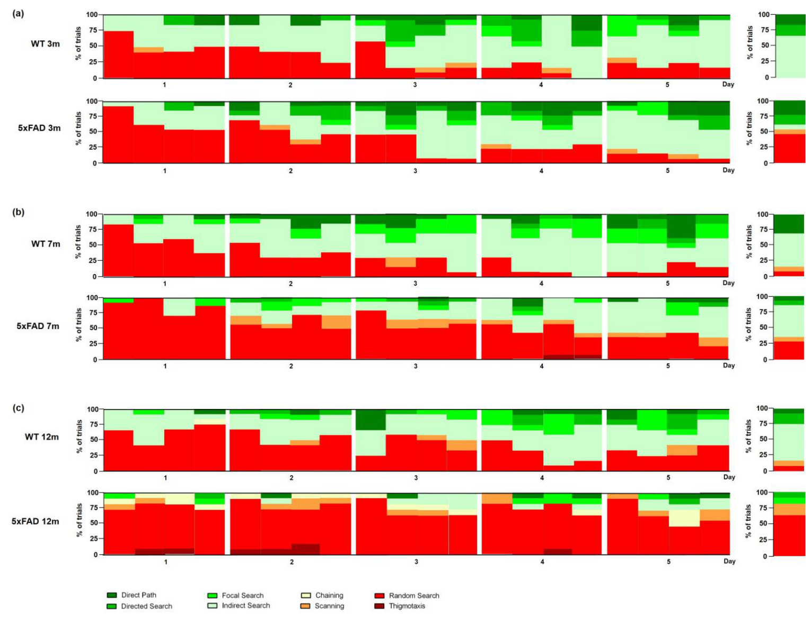
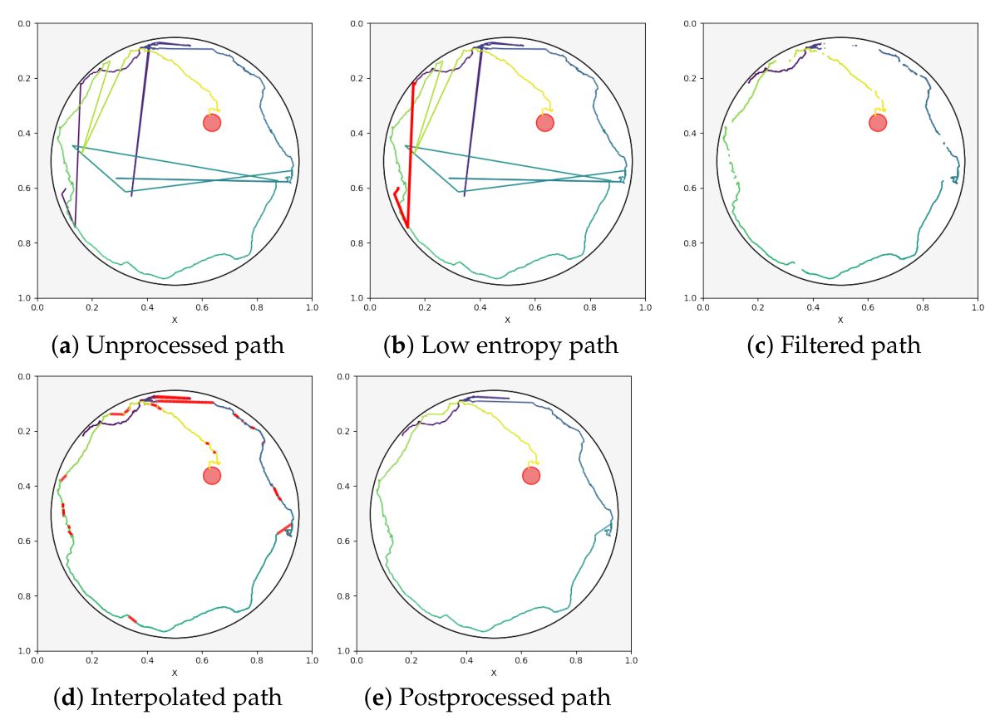
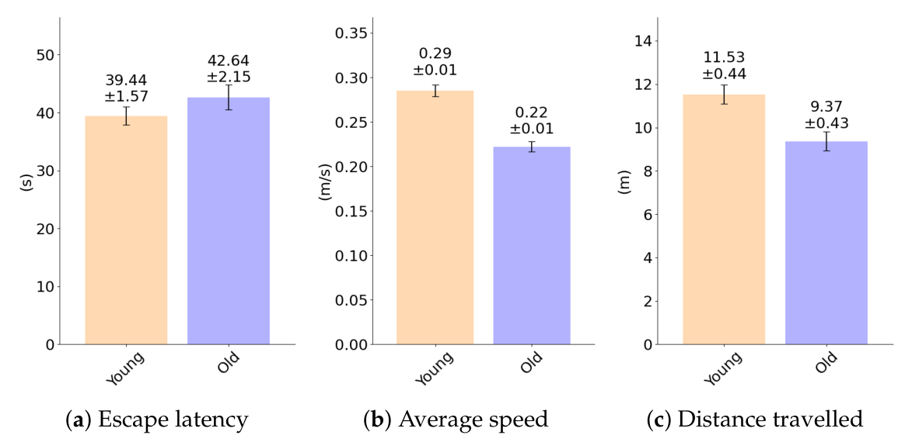

 文献示例 · Figure 5 · PDF p.10空间占据热图 · 完整图训练与反转任务的空间占据热图；保留自动色标和共同色标。 Cooke et al. (2020) · CC BY 4.0 · 原图裁剪 PNG 原尺寸WebP1512 × 1437
 文献示例 · Figure 5 · PDF p.10学习阶段热图 · 横向素材学习阶段 Day 1、Day 3、Day 8 和探测试次；上下两行采用不同的缩放方式。 Cooke et al. (2020) · CC BY 4.0 · 原图裁剪 PNG 原尺寸WebP1512 × 687
 文献示例 · Figure 5 · PDF p.10反转阶段热图 · 横向素材反转阶段 Day 1、Day 3 和探测试次；保留两种色标及阶段标题。 Cooke et al. (2020) · CC BY 4.0 · 原图裁剪 PNG 原尺寸WebP1179 × 687
 文献示例 · Figure 4 · PDF p.8搜索策略分类与分布搜索策略堆叠柱状图、行为指标及分类比较；保留全部图例。 Cooke et al. (2020) · CC BY 4.0 · 原图裁剪 PNG 原尺寸WebP1506 × 1377
 文献示例 · Figure 3 · PDF p.7学习与反转的多指标曲线任务时序示意和潜伏期、路径效率、朝向误差、熵等指标。 Cooke et al. (2020) · CC BY 4.0 · 原图裁剪 PNG 原尺寸WebP1251 × 1581
 文献示例 · Figure 2 · PDF p.65xFAD 学习曲线与游泳速度雌性 5xFAD 与 WT 的三个年龄组；潜伏期和游泳速度随训练日变化。 Quintanilla Sánchez et al. (2023) · CC BY 4.0 · 原图裁剪 PNG 原尺寸WebP1230 × 1407
 文献示例 · Figure 4 · PDF p.8探测试次的象限停留结果雌性小鼠不同年龄组的象限停留百分比及游泳速度。 Quintanilla Sánchez et al. (2023) · CC BY 4.0 · 原图裁剪 PNG 原尺寸WebP1530 × 1119
 文献示例 · Figure 6 · PDF p.105xFAD 搜索策略随训练变化三个年龄组的 WT 与 5xFAD 搜索策略分布；包含训练及探测试次。 Quintanilla Sánchez et al. (2023) · CC BY 4.0 · 原图裁剪 PNG 原尺寸WebP1530 × 1170
 文献示例 · Figure 6 · PDF p.8轨迹检测与后处理示例方法效果示例：原始轨迹、过滤、插值及修正后轨迹。 Lakatos et al. (2025) · CC BY 4.0 · 原图裁剪 PNG 原尺寸WebP1203 × 867
 文献示例 · Figure 8 · PDF p.10潜伏期、速度与距离对比Young 与 Old 两组的三项指标均值及标准误，分组名称沿用原论文。 Lakatos et al. (2025) · CC BY 4.0 · 原图裁剪 PNG 原尺寸WebP1173 × 570